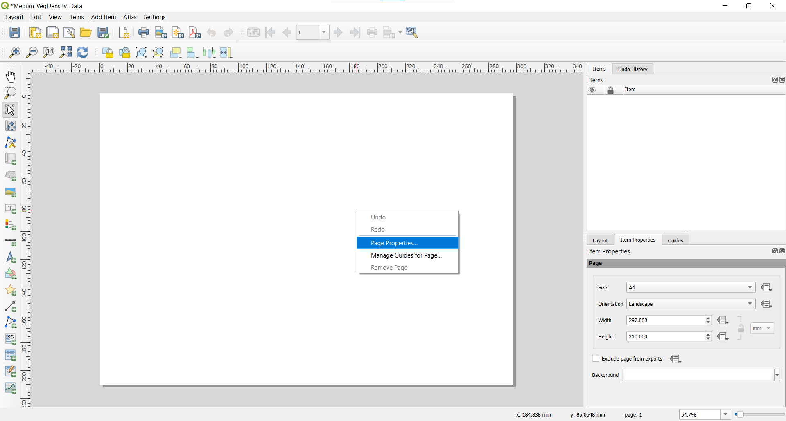
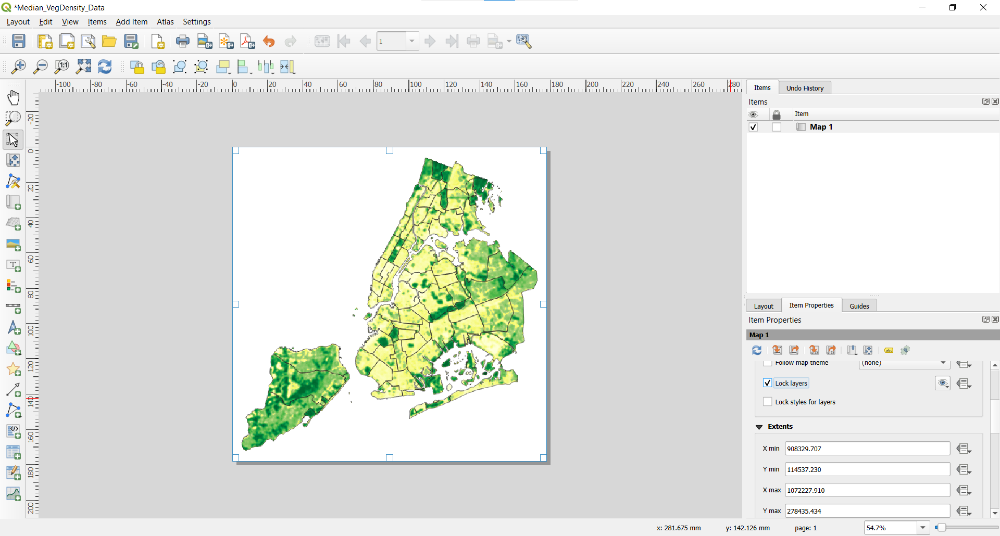
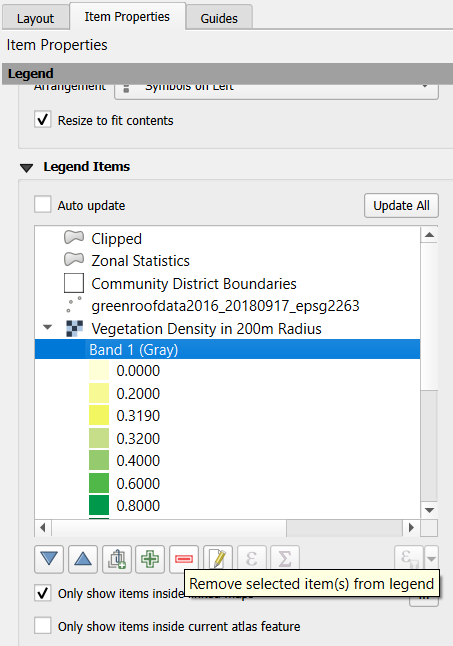
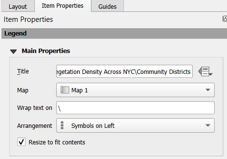
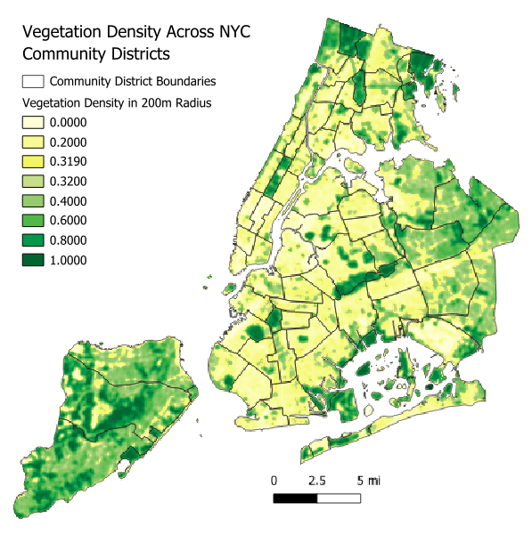

6 Making Maps
Of course GIS is not just about looking at data on your computer… its about sharing it with the world through maps! There’s a lot that one can do in terms of cartography in QGIS, and though not covered in this tutorial, you can even make interactive, web-based maps using the QGIS2Web, to post on a website, or even just share the files with others to explore the data themselves.
6.1 QGIS Layouts
Cartography in QGIS is mainly done through the Layouts window and respective set of tools. You can start creating a new print layout by clicking  towards the upper-left of toolbar in QGIS - if you do so, you will be prompted to name the layout. You can also click the Layout Manager icon
towards the upper-left of toolbar in QGIS - if you do so, you will be prompted to name the layout. You can also click the Layout Manager icon  , which will let you see what other layouts, if any, you’ve already created and create new ones, among other things.
, which will let you see what other layouts, if any, you’ve already created and create new ones, among other things.
After clicking and entering a name for a new layout, a new window will open - you may need to maximize it depending on your own computer. Once there, you can right-click on the blank white area, and select “Page Properties” to adjust things like the background color to be working with, and the paper size.

The default size is A4, or an 8.5x11 piece of paper; I often find myself using a custom sized, square sheet for NYC maps, so I change the “Size” to “Custom”, change the units from millimeters to inches, and specify the width and height as 7 inches.
This is basically the blank area with which we can fill with a map (or maps!) - to enable bringing a map from the main QGIS window into a Print Layout start by clicking  , then click and drag across the page area. Whatever you had in the main QGIS window should now appear. Also, the “Item properties” should be tied to the map that you just drew, with parameters associated with that (e.g., showing the map scale, any desired rotation, among many other things). At the top of the item properties for the Map, you will see icons, which will, for example, refresh what is shown on the page to reflect what is in the main map canvas, if you have changed things there. So, go back to your map canvas and adjust things to start working towards what you might like to show in a map!
, then click and drag across the page area. Whatever you had in the main QGIS window should now appear. Also, the “Item properties” should be tied to the map that you just drew, with parameters associated with that (e.g., showing the map scale, any desired rotation, among many other things). At the top of the item properties for the Map, you will see icons, which will, for example, refresh what is shown on the page to reflect what is in the main map canvas, if you have changed things there. So, go back to your map canvas and adjust things to start working towards what you might like to show in a map!
Once you have a set of layers and styles you generally like for your map, in the Item Properties for the Map, check the “Lock Layers” box, which will not affect the main map canvas, but will keep what is shown in the Print Layout as they are. Otherwise, any changes you make in the main map canvas would show up here.

Now, you can start adding things that might help make the map make sense - browse around and find things that you can add (e.g.,  for a legend,
for a legend,  for a North arrow).
for a North arrow).
With all of these things you can add, just as you did to add the map to the layout, you will click the respective icon, then click and drag to lay out a box of where the item should be placed. For each item, there will be a separate different options for the “Item Properties.”
Legends can be tricky, as by default all layers are included. However, you can check the box in the Item Properties for the legend, in the area with “Legend Items,” to only show the items within the map being shown. You’ll see the legend entries on the map decrease to only the layers being shown. Additionally, there are lots of options for fonts, spacing, and other aspects, worth browsing around for. Further, for each legend entry, you can, in the Item Properties, click the text to edit what the text will be in the legend. In my experience it can be helpful, for individual maps, to turn off “Auto Update” as you may edit things like labels for the legend items, and do not want those edits to be lost as QGIS updates based on what is being done through the main window (e.g., based on editing layer names or similar).
By default, with a raster, the legend will say something like “Band 1 (Gray),” as with the Vegetation Density data. In the Legend Items list, you can expand the legend entries for that layer, select that row of information that says “Band 1 (Gray”) and then click  below to remove it. (The box for Auto-Update must be unchecked to do this.)
below to remove it. (The box for Auto-Update must be unchecked to do this.)
And note, there are different ways to improve the appearance of legends, such as for rasters, in the symbology settings for the layers - what is shown below is just the basic example to start with.

While you can add a new text box in the layout for a map title, I’ve decided to use the Legend Title space as a place for the map title. For the full title I wanted to include, “Vegetation Density Across NYC Community Districts” would overlap portions of the data being shown, I used the ability to specify a character on which to wrap the text - I used a backslash but you could chose any character that is not part of the title. (In the text of the title, below, you can see I inserted a backslash between “NYC” and “Community” and specified that as the “wrap text on” character, and the backslash is not visible in the title on the page).

I also scrolled down in the Item Properties for the legend, and unchecked the “Background” so that if the legend box overlapped with parts of the map itself, it was not visible.
As an example, below is the map I produced.

You can then export the map to various formats including as images ( ), PDFs (
), PDFs ( ), and SVG files (
), and SVG files ( )
)